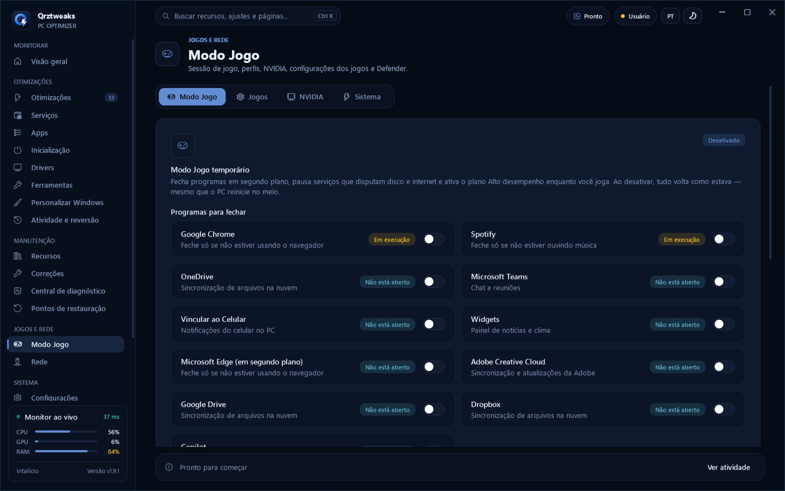
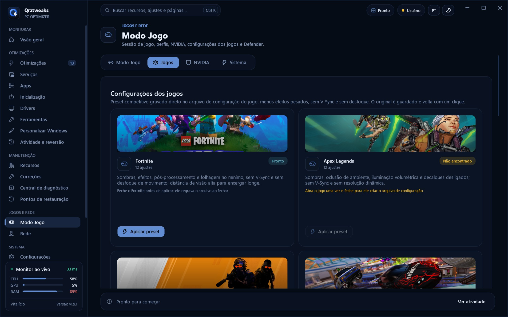
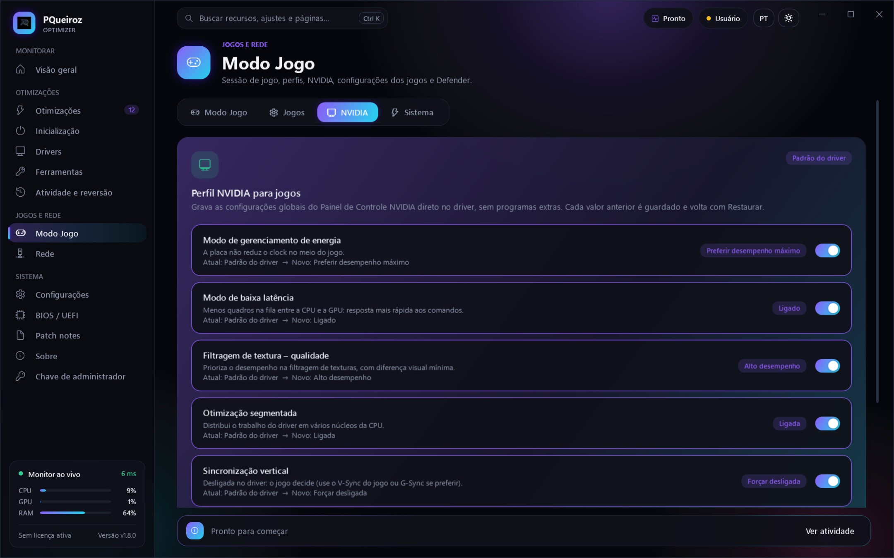
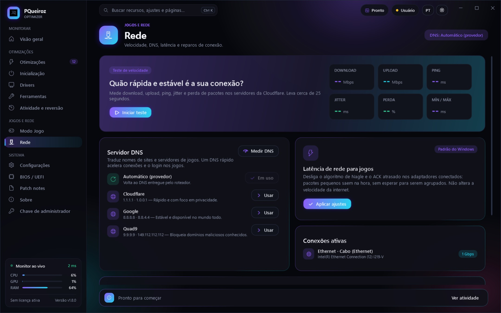
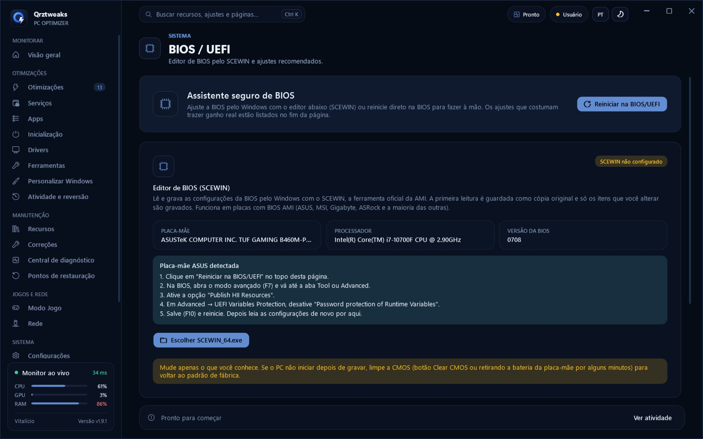

Versão Avançada
Desempenho, latência, privacidade e políticas do Editor de Política de Grupo em um único fluxo revisável.
Ver release ↗Versão mais recente · Smart Optimize, Performance Lab e Command Center
Modo Jogo, perfil NVIDIA, plano de energia de baixa latência, editor de BIOS e otimizações revisadas item por item — em um painel bonito, com monitor ao vivo e reversão em um clique.
Por dentro do Qrztweaks
O Qrztweaks reúne diagnóstico, manutenção e ajustes avançados em um painel direto. Você escolhe o que aplicar e acompanha cada etapa.
Desempenho, latência, privacidade e políticas do Editor de Política de Grupo em um único fluxo revisável.
Ver release ↗Analise antes de excluir. Arquivos recentes e itens protegidos ficam preservados.
Snapshots, histórico e tentativa de reversão dos itens que falharem.
Hardware, latência DPC, temperatura e benchmark com comparação antes → depois.
Novo na 2.0
Escolha o objetivo e o Qrztweaks lê o hardware e o estado de cada ajuste antes de recomendar. O que já está aplicado, não se aplica ao seu PC ou conflita com outro ajuste aparece separado, com o motivo.
Processador, placa de vídeo, memória, disco, Windows, plano de energia e virtualização. Cada ajuste é lido no registro, nos serviços e nos apps: recomendado, já aplicado, não aplicável, incompatível, requer revisão ou falha na leitura.
Cada item mostra o risco (Seguro, Moderado ou Avançado), se precisa reiniciar, os efeitos colaterais, como reverter e a evidência do benefício. Conflitos bloqueiam a aplicação até você escolher.
Ponto de restauração e backup de cada item antes de mudar. Depois, o estado é lido de novo no Windows: um ajuste só aparece como concluído se a mudança for confirmada.
No objetivo Programação, Docker, WSL e Hyper-V são preservados. Alterações de BIOS e desativação de proteções do Windows nunca entram no Smart Optimize.
Novo na 2.0
FPS médio, mínimo, 1% low, 0,1% low e frametime P95/P99 calculados a partir da apresentação real dos quadros, com o PresentMon. Uso de CPU e GPU, memória, clocks, potência e indícios de limitação gravados a cada segundo. Nada é estimado: sem dados reais, o campo fica vazio.
Gráficos de FPS, CPU, GPU e temperatura enquanto você joga, com a captura rodando em segundo plano.
Diferença absoluta e percentual, com aviso quando driver, resolução, Windows ou plano de energia mudaram entre os testes.
Testa um ajuste por vez com várias gravações. Diferenças pequenas ou inconsistentes aparecem como sem diferença comprovada.
Exportação em CSV, JSON e PDF, com hardware, drivers e versão do Windows de cada teste.
Só publicamos resultados verificáveis, cada um com hardware, jogo, configurações, resolução, metodologia, FPS médio, 1% low e variação entre as gravações. Ainda não há resultados publicados; quando houver, eles aparecem aqui.
Metodologia: mesma cena do jogo, mesmas configurações e resolução, pelo menos 3 gravações de 60 s antes e depois, PC aquecido e sem outros programas abertos. O ganho só conta se for consistente (teste t de Welch, p < 0,05) e maior que 3%.
Segurança
Um otimizador roda como administrador. Por isso cada mudança é revisável, tem backup e pode ser desfeita, e o próprio app é protegido contra adulteração.
Recursos
Cada tela abaixo é o Qrztweaks de verdade. Os recursos novos se somam às otimizações revisáveis, à limpeza e à inicialização que você já conhece.

Fecha programas em segundo plano, pausa Windows Update, indexação e telemetria e ativa o plano de desempenho enquanto você joga. Ao desativar, serviços e plano voltam como estavam — mesmo que o PC reinicie no meio.

Fortnite, Apex Legends, Counter-Strike 2 e Rocket League com sombras e efeitos pesados no mínimo, sem V-Sync e sem desfoque. O arquivo original é guardado e volta com um clique.

Gerenciamento de energia no máximo, modo de baixa latência, filtragem de textura de desempenho e cache de sombreador ilimitado, gravados direto no driver. Mais o plano Qrz: processador sem estacionamento de núcleos e PCIe, disco e Wi-Fi sem economia de energia.

Teste de velocidade com perda de pacotes, troca de DNS (Cloudflare, Google, Quad9) com medição de qual responde mais rápido, ajuste de latência para jogos reversível e reparos de conexão.

Leia e ajuste a BIOS pelo Windows com o SCEWIN (placas com BIOS AMI), com recomendações seguras e cópia original. E reinstale o driver de vídeo do zero com o DDU: o novo instalador abre sozinho depois do reinício.
Galeria
Clique para ampliar. Use as setas do teclado para navegar.
Download
O instalador é gratuito e sempre a versão mais recente. Na primeira abertura, o app mostra o ID do seu computador e copia o pedido de ativação para você mandar no Discord.
Execute o instalador; ele cria os atalhos e se atualiza sozinho depois.
A tela de ativação mostra o ID do PC. Clique em Copiar pedido.
Envie o pedido no ticket do Discord, pague via Pix e cole a chave recebida.
Planos e preços
Pague só pelo que vai usar: do essencial no Base ao app completo no Avançado, ou pague uma vez e use para sempre. A compra é feita no nosso servidor do Discord, onde você recebe sua chave.
Mensal
R$15/mês
O essencial para deixar o PC leve
Mensal
R$25/mês
Tudo do Base, mais o segundo plano
Mensal
R$29,99/mês
Todo o app de otimização
Para sempre
R$59,99único
App completo, sem vencimento · o preço de 2 meses do Avançado
| Recurso | Base | Interm. | Avançado | Vitalício |
|---|---|---|---|---|
| Otimizações (Versão Padrão), Inicialização, Correções e Ferramentas | ||||
| Backup, pontos de restauração e reversão | ||||
| Serviços, Apps e Debloat | ||||
| Drivers, Rede, Recursos e diagnóstico | ||||
| Modo Jogo, perfil NVIDIA e Versão Avançada | ||||
| BIOS / UEFI, Personalizar Windows e Modo de energia | ||||
| Reemissão após formatar e suporte prioritário | ||||
| Validade | 30 dias | 30 dias | 30 dias | Não vence |
| Pagamento (Pix) | R$ 15/mês | R$ 25/mês | R$ 29,99/mês | R$ 59,99 único |
Comece pelo plano que precisa e suba quando quiser: no app, em Configurações → Minha licença, o botão de upgrade copia o pedido para o ticket.
Em breve As edições personalizadas do Windows 11 estão em preparação e ainda não estão à venda. Entre no Discord para ser avisado no lançamento.
Uso geral
Em breve
Leve e limpo, sem mexer pesado em serviços
Jogos e desempenho
Em breve
Tudo do Optimized, com perfil forte
Programação
Em breve
Perfil forte da Advanced + ambiente de desenvolvimento
Onde comprar
Todas as vendas acontecem no nosso servidor. Entre, fale com a equipe, escolha o produto e combine o pagamento. A chave é entregue por lá.
Entrar no servidorPlanos mensais
A renovação não é automática: você só paga se quiser continuar. Quando o plano estiver acabando, é assim:
Nos últimos 7 dias, o painel mostra quantos dias faltam e o botão Renovar pelo Discord.
O botão copia o seu pedido de renovação e abre o Discord. Abra um ticket de renovação e cole o pedido.
O valor do seu plano (R$ 15, R$ 25 ou R$ 29,99) no Pix, direto no ticket. Se preferir, faça o upgrade para o Vitalício e nunca mais renove.
Renovando antes de vencer, os 30 dias são somados à validade atual: você não perde nenhum dia.
Comparativo
Otimização por acesso remoto ou scripts copiados da internet deixam você sem controle do que mudou. No Qrztweaks, é você quem decide.
Em breve Imagem personalizada · 25H2 · build 26200
Três edições do Windows 11 Pro já limpas e configuradas, para começar do zero com uma base consistente: dia a dia, desempenho ou programação. Ainda estão em preparação; entre no Discord para ser avisado no lançamento.
Windows 11 Pro (build 26200) sem apps patrocinados, anúncios, Widgets, Copilot e Recall, com tema escuro Qrztweaks, barra de tarefas limpa e Windows Terminal como padrão.
A ativação usa só meios oficiais: a licença digital do seu PC, a chave gravada na placa-mãe ou uma chave sua. Não há crack nem KMS.
A instalação apaga o disco principal quando ele está vazio e entra direto numa conta local. Faça backup antes e desconecte outros discos.
O Microsoft Defender e o SmartScreen vêm desativados. Se quiser, reative em Segurança do Windows ou use outro antivírus.
O arquivo de instalação passa de 4 GB: grave o pendrive com Rufus ou Ventoy (NTFS), não com FAT32.
Uma janela aplica os ajustes finais e gera um relatório de verificação. Na Developer, as ferramentas são baixadas nessa hora (precisa de internet).
Como comprar
Acesse o servidor oficial do Qrztweaks. Toda venda é feita por lá.
Escolha o Base, o Intermediário, o Avançado ou o Vitalício e combine o pagamento com a equipe.
No Qrztweaks, clique em Copiar pedido e envie. A chave chega pelo Discord e é colada sozinha na tela de ativação.
Perdeu sua chave?
A chave é vinculada ao computador. Se você formatou o PC, abra o Qrztweaks, clique em Copiar pedido e envie em um ticket no Discord junto com o comprovante da compra. No plano Vitalício, a reemissão da chave está incluída; nos planos mensais, fale com o suporte no mesmo ticket.
Histórico de versões
O Qrztweaks se atualiza sozinho: cada versão nova é conferida por SHA256 e pela assinatura do Qrztweaks antes de instalar. A lista abaixo vem das releases oficiais no GitHub.
Diretrizes
Leia estas orientações antes de comprar. Toda a venda é feita no nosso servidor do Discord.
Termos de compra
Seus direitos como consumidor, conforme o Código de Defesa do Consumidor (Lei nº 8.078/1990).
Nas compras realizadas fora de estabelecimento comercial, como pela internet, o consumidor pode desistir da compra no prazo de 7 (sete) dias corridos, contados da data da compra ou do recebimento do acesso ao produto, o que ocorrer por último, nos termos do art. 49 do CDC. Nesse caso, o valor pago é devolvido integralmente, sem necessidade de justificativa.
Todos os produtos contam com a garantia legal de 90 (noventa) dias prevista no art. 26, inciso II, do CDC, contados da entrega do acesso. Constatado defeito que impeça o uso adequado do produto, o problema será corrigido em até 30 (trinta) dias. Não sendo corrigido nesse prazo, o consumidor poderá escolher entre a substituição do produto, a restituição do valor pago ou o abatimento proporcional do preço, nos termos dos arts. 18 e 20 do CDC.
Pedidos de desistência, reembolso ou acionamento da garantia devem ser feitos pelo servidor oficial do Discord ou pelo e-mail pqueirozdev@gmail.com, informando nome, produto adquirido, data da compra e comprovante de pagamento.
O reembolso é feito pelo mesmo meio de pagamento utilizado na compra, em até 7 (sete) dias corridos após a confirmação da solicitação, com o valor integral pago.
Com a devolução do valor, a chave de acesso ou o acesso ao produto adquirido é desativado.
Os requisitos de cada produto estão descritos nesta página, e recomendamos conferi-los antes da compra. Nenhuma disposição deste site limita ou exclui direitos garantidos ao consumidor pelo Código de Defesa do Consumidor.
Perguntas frequentes
O Base (R$ 15/mês) libera as otimizações revisadas, Inicialização, Correções, Ferramentas e a Limpeza rápida. O Intermediário (R$ 25/mês) soma Serviços, Apps e Debloat, Drivers, Rede, Recursos e a Central de diagnóstico. O Avançado (R$ 29,99/mês) libera o app inteiro, com Modo Jogo, perfil NVIDIA, BIOS / UEFI e Personalizar Windows. O Vitalício (R$ 59,99 uma vez) é o app completo sem vencimento, com reemissão da chave se você formatar o PC e suporte prioritário. Em todos, a reversão do que foi aplicado fica sempre disponível. Veja a tabela.
Pode. No app, em Configurações → Minha licença, cada plano acima do seu tem um botão de upgrade que copia o pedido; cole no ticket do Discord, pague a diferença via Pix e ative a chave nova. As páginas fora do seu plano também mostram o botão de upgrade.
Para aplicar ajustes, sim. Você pode baixar o instalador antes de comprar e usar o modo demonstração: veja o hardware, o monitor ao vivo, o diagnóstico, o Performance Lab e as recomendações do Smart Optimize, sem aplicar nada. Para ativar, o app mostra o ID do computador e um botão para copiar o pedido; envie no ticket do Discord e a chave chega vinculada ao seu PC.
Não. Ele analisa e marca o que é recomendado para o seu objetivo, mas você revisa item por item antes de aplicar. Depois, o app lê o estado do Windows de novo e mostra o que foi confirmado.
O Performance Lab usa o PresentMon, ferramenta aberta e gratuita da Intel: baixe no GitHub oficial e escolha o arquivo no app. Sem ele, o Performance Lab grava os sensores (CPU, GPU, memória), mas não mostra FPS, porque FPS não é estimado.
Sim. É uma janela separada, para um segundo monitor, e não um overlay dentro do jogo: nada é injetado no processo do jogo.
Quando estiver acabando, o app avisa. Clique em Renovar pelo Discord, abra um ticket de renovação, cole o pedido e pague via Pix. Os 30 dias novos são somados à validade atual. Veja Como renovar.
Não. Não existe cobrança recorrente: se você não renovar, a licença simplesmente expira ao fim dos 30 dias.
A chave é vinculada ao computador, então depois de formatar é preciso uma chave nova. Na tela de ativação, clique em Troquei de PC / reinstalei o Windows: o app copia um pedido de transferência com o novo ID; envie em um ticket no Discord. No Vitalício, a reemissão está incluída.
Cada chave vale para um computador. Para outro PC, é preciso outra licença.
Não. Os fluxos avançados mostram as etapas e permitem selecionar exatamente o que será aplicado.
Configurações de registro, energia e serviços têm backup. Remoções de arquivos e aplicativos exigem reinstalação ou backup próprio, e o app avisa antes quais etapas não são reversíveis.
As edições ainda estão em preparação e não estão à venda; entre no Discord para ser avisado no lançamento. Serão três: Optimized para o dia a dia: limpo, sem desligar serviços de forma agressiva. Advanced para jogos e desempenho: menos serviços e atividade em segundo plano. Developer para programar: o perfil da Advanced com WSL 2, Hyper-V e as ferramentas de desenvolvimento já instaladas. Todas desativam o Defender e fazem instalação limpa; veja os detalhes.
Windows 10 (versão 1809 ou mais nova) e Windows 11 em computadores x64. O editor de BIOS funciona em placas com BIOS AMI, e o perfil NVIDIA exige uma placa NVIDIA com driver instalado.
Sim. Você pode desistir da compra em até 7 dias corridos e receber o valor pago integralmente. Além disso, há garantia legal de 90 dias contra defeitos. Veja os detalhes na Política de reembolso e garantia.
Informe seu nome, o produto comprado, o comprovante e uma descrição do problema. Nunca envie sua chave publicamente.
Suporte
Dúvidas sobre compra, instalação, ativação ou renovação? Fale com a gente no Discord ou pelos outros canais.